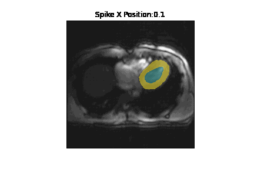
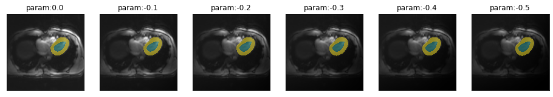

import fastai.medical.imagingSimulated MR artifacts (torchio)
If you use these transformations which all build on TorchIO, please cite the following paper: > Pérez-García et al., TorchIO: a Python library for efficient loading, preprocessing, augmentation and patch-based sampling of medical images in deep learning. Link: https://arxiv.org/abs/2003.04696
Spike artifact
import matplotlib.pyplot as plt
from ipywidgets import interact, interactive, fixed, interact_manual
import ipywidgets as widgetsget_spike_series
get_spike_series (image, model, start=0, end=2.5, step=0.5, spikePosition=[0.1, 0.1], **kwargs)
spikeTransform
spikeTransform (image, intensityFactor, spikePosition=[0.1, 0.1])
fname = "example/b0/images/val_example_0.png"
img = lambda: Image.open(fname).resize((256,256)).convert ("RGB")
trueMask = lambda: Image.open(fname.replace("image","mask"))spikeTransform(img(), 1, spikePosition=[.5,.5])def interactiveSpikeTransform(intensity, x, y):
plt.imshow(spikeTransform(img(), intensity, [x,y])) #figsize=(8,8))interactive_plot = interactive(
interactiveSpikeTransform,
intensity=widgets.FloatSlider(min=0, max=3, step=.1, value=1, continuous_update=True),
x=widgets.FloatSlider(min=0, max=.99, step=.05, value=.5, continuous_update=True),
y=widgets.FloatSlider(min=0, max=.99, step=.05, value=.5, continuous_update=True)
)
interactive_plotplt.imshow(spikeTransform(img(), .8, [.4,.3]), cmap="bone") #figsize=(8,8),<matplotlib.image.AxesImage>
def label_func(x):
pass
def acc_seg(input, target):
pass
def diceComb(input, targs):
pass
def diceLV(input, targs):
pass
def diceMY(input, targs):
passtrainedModel = Fastai2_model('chfc-cmi/transversal-cmr-seg', 'b0_transversal_5_5', force_reload=False)Using cache found in /home/markus/.cache/torch/hub/chfc-cmi_transversal-cmr-seg_masterSpike intensity
series = get_spike_series(img(), trainedModel, truth=trueMask(), tfm_y=False)plot_series(series)spikePosition = [.45,.55]
plot_series(get_spike_series(img(), trainedModel, truth=trueMask(), spikePosition=spikePosition))spikePosition = [.5,.52]
plot_series(get_spike_series(img(), trainedModel, truth=trueMask(), spikePosition=spikePosition))eval_spike_series
eval_spike_series (image, mask, model, step=0.1, start=0, end=2.5, spikePosition=[0.1, 0.1], param_name='intensity', **kwargs)
results = eval_spike_series(img(), trueMask(), trainedModel)
plt.plot(results['intensity'], results['c1'], label='LV')
plt.plot(results['intensity'], results['c2'], label='MY')
plt.legend()
plt.xlabel('relative intensity')
plt.ylabel('dice')
_ = plt.title(f'spike position: {[.1,.1]}')Spike position
get_spike_pos_series
get_spike_pos_series (image, model, start=0.1, end=0.9, step=0.1, intensityFactor=0.5, spikePositionY=0.1, **kwargs)
spikePosTransform
spikePosTransform (image, spikePositionX, spikePositionY=0.1, intensityFactor=0.5)
series = get_spike_pos_series(img(), trainedModel, intensityFactor=0.1, spikePositionY=0.1)
plot_series(series, nrow=1, figsize=(20,15), param_name='Spike X Position')eval_spike_pos_series
eval_spike_pos_series (image, mask, model, step=0.1, start=0.1, end=0.9, intensityFactor=0.1, param_name='Spike X Position', **kwargs)
intensityFactor = 0.2
results = eval_spike_pos_series(img(), trueMask(), trainedModel, step=0.05, intensityFactor=intensityFactor)
plt.plot(results['Spike X Position'], results['c1'], label='LV')
plt.plot(results['Spike X Position'], results['c2'], label='MY')
plt.legend()
plt.xlabel('X position of the spike')
plt.ylabel('Dice')
_ = plt.title(f'Spike intensity = {intensityFactor}')gif_series(
get_spike_pos_series(img(),trainedModel, start=0.1, end=0.9 ,step=0.1, intensityFactor=0.2),
"example/kaggle/spike_pos.gif",
param_name="Spike X Position",
duration=400
)
Bias Field (\(B_0\))
The bias field function is still experimental as it lacks configurability. To make it deterministic all coefficients are set to the exact same value. This represents only one specific possibility of field inhomogeneity.
image = img()
image = np.array(image)[:,:,0]
image = np.expand_dims(np.array(image), 0)
image = np.expand_dims(np.array(image), 0)
image.shape(1, 1, 256, 256)coefficients = RandomBiasField().get_params(3,[-.3,-.3])bf = BiasField.generate_bias_field(image, order=3, coefficients=coefficients)plt.imshow(bf[0])<matplotlib.image.AxesImage>image[0][0].shape
image = image/255image = torch.from_numpy(image)
result = image[0][0] * bf[0]
result = torch.stack((result,result,result))
result = np.array((torch.clamp(result,0,1)))
result = result*255
result = result.astype(np.uint8)
result = np.moveaxis(result, 0, 2)
result = Image.fromarray(result)
plt.imshow(result)<matplotlib.image.AxesImage>get_biasfield_series
get_biasfield_series (image, model, start=0, end=-0.6, step=-0.2, order=3, **kwargs)
biasfieldTransform
biasfieldTransform (image, coef, order=3)
plot_series(get_biasfield_series(img(),trainedModel,step=-.1),nrow=1)
biasfieldTransform(img(),-.5)eval_biasfield_series
eval_biasfield_series (image, mask, model, step=-0.05, start=0, end=-0.55, order=3, **kwargs)
results = eval_biasfield_series(img(), trueMask(), trainedModel)
plt.plot(results['coefficient'], results['c1'], label='LV')
plt.plot(results['coefficient'], results['c2'], label='MY')
plt.legend()
plt.xlabel('coefficient')
_ = plt.ylabel('dice')